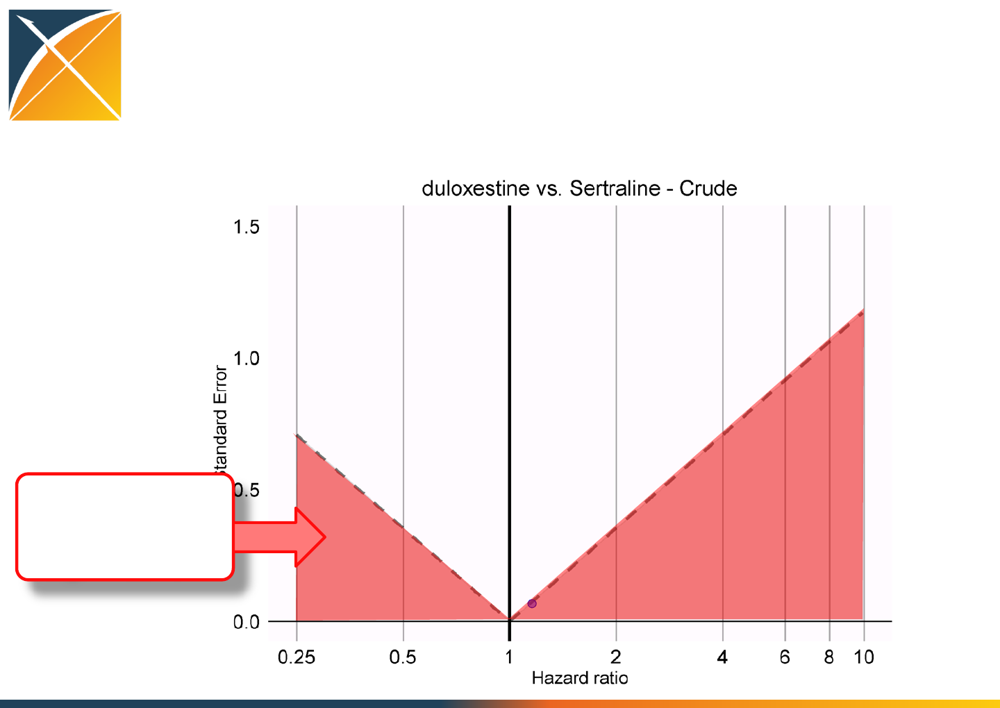
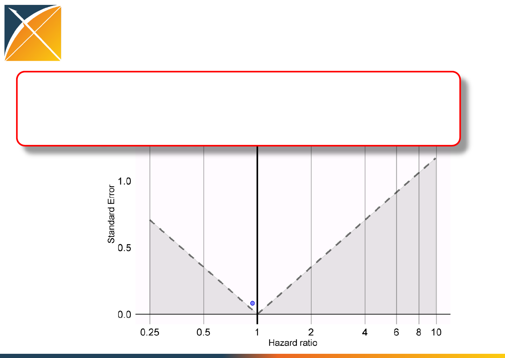
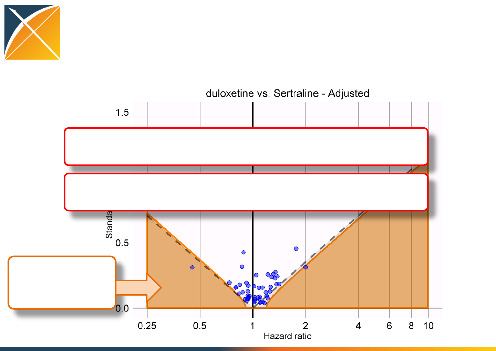
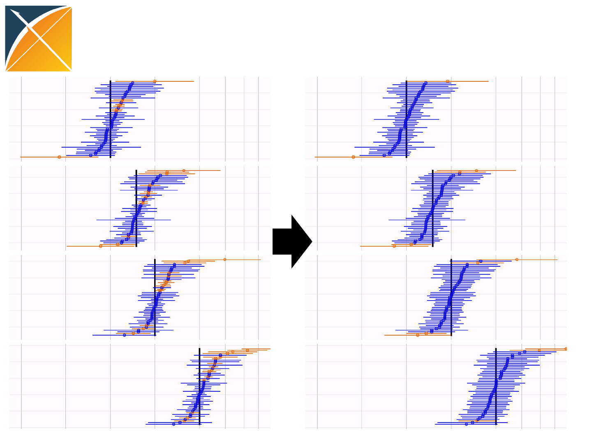
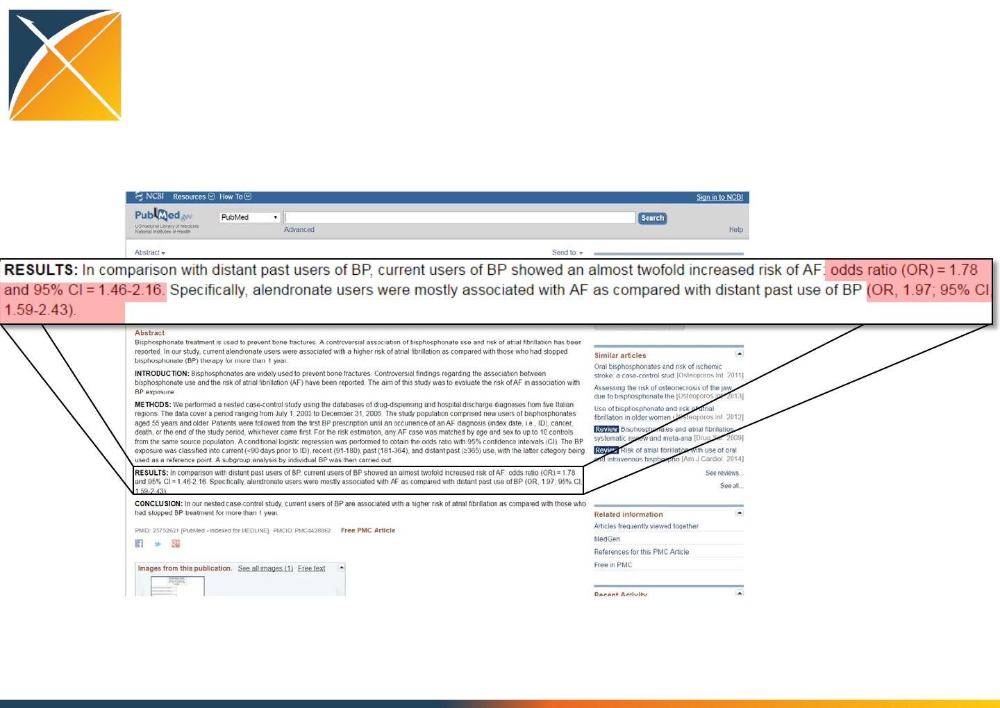
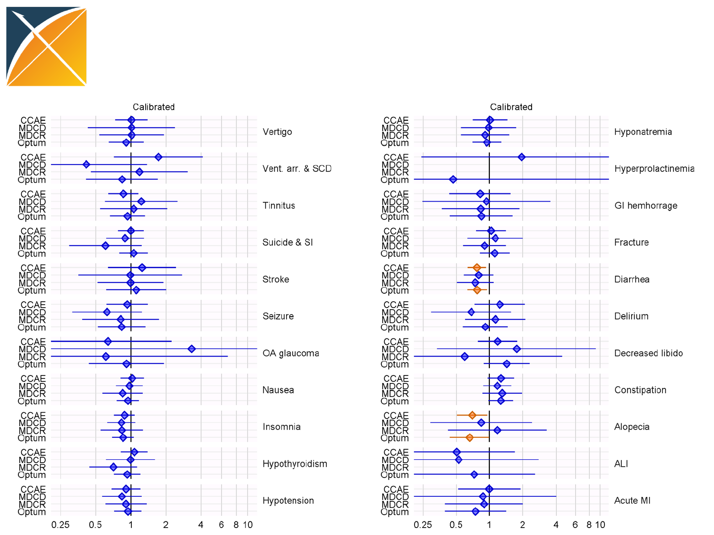
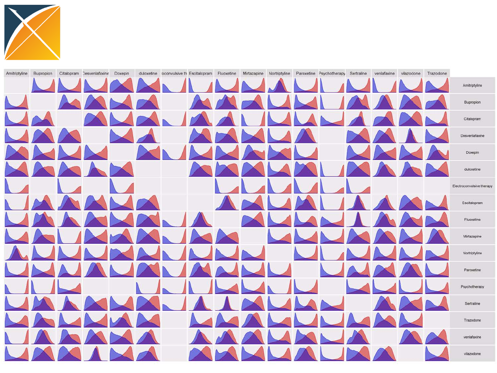

The journey toward
Population-level
Effect Estimation
Martijn Schuemie, PhD
Janssen Research and Development

Population-level effect estimation
•What is the effect of treatment A on outcome X?
•What is the effect of treatment A on outcome X,
compared to exposure B?
2
Population-level effect estimation
Evidence
Generation
•How to produce
evidence from the
data?
Evidence
Evaluation
•How do we know
the evidence is
reliable?
Evidence
Dissemination
•How do we share
evidence to
inform decision
making?
3
4
Let me see what I find in the literature…
Doctor, I’m starting on duloxetine,
should I be worried about stroke?
Evidence from literature
Paper by Lee et al, 2016
•Compare new users of SNRIs (includes duloxetine) vs SSRIs
•Taiwanese insurance claims data
•12 month washout
•remove people using both drugs
•remove people with a prior history of head injury
•remove people with a prior history of stroke or intracranial hemorrhage
•Propensity score: logistic regression with treatment as dependent variable
•HOI is Stroke: first hospitalization with ICD-9 433,434, or 436
•time-varying Cox regression using 5 PS strata
5

How reliable is this evidence?
•Can the results be reproduced?
•Did the analysis program do what it was supposed to
do?
•Is the estimate unbiased?
•Does the p-value have nominal characteristics?
•Does the confidence interval really represent the
uncertainty about the effect size?
Are we really 95% confident the true effect size is between
0.90 and 1.12?
6

Population-level effect estimation
Evidence
Generation
•How to produce
evidence from the
data?
Evidence
Evaluation
Evidence
Dissemination
7
‘Replicating’ Lee et al.
Our replication:
•Compare new users of Duloxetine (SNRI) vs. Sertraline (SSRI)
•US insurance claims data (Truven CCAE)
•12 month washout
•remove people using both drugs
•remove people with a prior history of stroke
•restricted to people with a diagnosis of major depressive disorder and no
prior diagnosis of bipolar disorder or schizophrenia
•Propensity score: regularized logistic regression with treatment as
dependent variable, and used 58,285 covariates
•HOI is Stroke: first hospitalization with ICD-9 433,434, or 436 (but then
coded as standard concepts)
•fixed-time Cox regression using 10 PS strata
8
OHDSI recommendations for
evidence generation
Post protocol online
•Prespecify research objectives and design decisions
Make study code open source
•From CDM to hazard ratios
Use validated software
•OHDSI Methods Library uses unit tests and simulation
Replicate across several databases
•4 included so far, more will follow
9
https://github.com/OHDSI/StudyProtocols/LargeScalePopEst
Population-level effect estimation
Evidence
Generation
Evidence
Evaluation
•How do we know
the evidence is
reliable?
Evidence
Dissemination
10

Standard diagnostics
Most study designs have diagnostics that could
be used, e.g.
•Propensity score distribution overlap
•Covariate balance
11
Diagnose the propensity score
distribution
12
Results from Truven CCAE
Duloxetine: n = 90,043
Sertraline: n = 175,950
Any covariate adjustment strategy that corrects for
this bias will result in impact in the generalizability of
the findings to the original research question
Only 45% of patients are near clinical equipoise,
most patients are systematically different from the
comparator group
We therefore know crude analysis will likely be biased
Duloxetine vs. Sertraline
Diagnose covariate balance
13
Before stratification
After stratification
After stratification on the propensity score, all 58,285 covariates have
standardized difference of mean < 0.1
Age group 10-14
Duloxetine Sertraline
Before stratification 0.2% 3.8%
After stratification 0.3% 0.8%

Empirical evaluation of the study
•Control
exposure-outcome for which the effect size is known
•Negative control
exposure-outcome where relative risk is believed to be 1
•Negative controls for comparative effectiveness
outcomes not believed to be caused by either treatments
Example: ingrowing nail
14
Negative control: ingrowing nail
15
Crude estimate:
HR = 1.16 (1.01 – 1.32), p = 0.03
Negative control: ingrowing nail
16
Not statistically
significant

Negative control: ingrowing nail
17
Statistically
significant

Negative control: ingrowing nail
18
Adjusted estimate:
HR = 0.94 (0.80 – 1.10), p = 0.44
Depression – negative controls
Acariasis Ingrowing nail
Amyloidosis Iridocyclitis
Ankylosing spondylitis Irritable bowel syndrome
Aseptic necrosis of bone Lesion of cervix
Astigmatism Lyme disease
Bell's palsy Malignant neoplasm of endocrine gland
Benign epithelial neoplasm of skin Mononeuropathy
Chalazion Onychomycosis
Chondromalacia Osteochondropathy
Crohn's disease Paraplegia
Croup Polyp of intestine
Diabetic oculopathy Presbyopia
Endocarditis Pulmonary tuberculosis
Endometrial hyperplasia Rectal mass
Enthesopathy Sarcoidosis
Epicondylitis Scar
Epstein-Barr virus disease Seborrheic keratosis
Fracture of upper limb Septic shock
Gallstone Sjogren's syndrome
Genital herpes simplex Tietze's disease
Hemangioma Tonsillitis
Hodgkin's disease Toxic goiter
Human papilloma virus infection Ulcerative colitis
Hypoglycemic coma Viral conjunctivitis
Hypopituitarism Viral hepatitis
Impetigo Visceroptosis
19
Generated with the help of LAERTES (see posters)
All negative controls - crude
20
We would expect 5% of negative controls to have p < 0.05
Instead, 68% has p < 0.05!
We found crude estimates to be uninformative. Do not use for decision
making!
All negative controls - adjusted
21
When using the propensity score, 16% have p < 0.05
In the past, we’ve shown you how you can perform p-value calibration:
•P-value represents probability of estimate when true RR = 1
•Negative controls provide empirical distribution of estimates when RR = 1
•Use empirical null distribution to compute calibrated p-value

P-value calibration
22
After calibration, 4% have p < 0.05 (was 16%)
What if HR <> 1?
Calibrated p <
0.05
Trouble with positive controls
•Often very few positive examples for a particular
comparison
•Exact effect size never known with certainty (and
depends on population)
•Doctors also know they’re positive, and will change
behavior accordingly
23

Creating positive controls
•Start with negative controls: RR = 1
•Add simulated outcomes during exposure until
desired RR is achieved
•Injected outcomes should behave like ‘real’
outcomes: preserve confounding structure by
injecting outcomes for people at high risk
24
Creating positive controls
25
Patient 1 Duloxetine
Patient 2 Sertraline
Patient 3 Duloxetine
Patient 4 Sertraline
Duloxetine
Patient 6 Sertraline
Ingrowing nail
Injected ingrowing nail
Patient 5
Predictive model of outcome indicates this is a
high-risk patient
New RR = 2 (but with same confounding)
26
0.25 0.5 1 2 4 6 8
Estimated effects for positive controls
10
Black line indicates
true hazard ratio
Estimating effects for positive controls
27
0.25 0.5 1 2 4 6 8 10
Ingrowing nail
True RR = 1
Estimated RR = 0.94 (0.80 – 1.10)
Estimating effects for positive controls
28
0.25 0.5 1 2 4 6 8 10
Ingrowing nail+
True RR = 1.5
Estimated RR = 1.47 (1.27 – 1.69)
Estimating effects for positive controls
29
0.25 0.5 1 2 4 6 8 10
Ingrowing nail++
True RR = 2
Estimated RR = 1.91 (1.67 – 2.19)
Estimating effects for positive controls
30
0.25 0.5 1 2 4 6 8 10
Ingrowing nail+++
True RR = 4
Estimated RR = 3.89 (3.53 – 4.48)
Estimating effects for positive controls
31
0.25 0.5 1 2 4 6 8 10
Analysis suggests bias remains constant with effect size
Evaluating coverage of the CI
32
0.25 0.5 1 2 4 6 8 10
83%
74%
70%
68%
Coverage
Coverage decreases with true effect size
Missing the true effect size 30% of the time when the
true RR = 2!
Coverage of 83% means the true effect size is outside
of the 95% confidence interval 17% of the time
(when the true RR = 1)
Confidence interval calibration
33
= 1
µ
σ
µ = αµ + βµlog ()
σ = ασ + βσlog ()
Estimated systematic
error distribution
= 2
µ
σ
Calibrating a confidence interval
34
µ= 0.04 + 1.01 log(HRtrue)
σ
= 0.07 + 0.05 log(HRtrue)
0.94 (0.80 - 1.10) 0.90 (0.75 - 1.11)
CI
Calibration
Uncalibrated Calibrated
Confidence intervals were too narrow, so made
wider to get to nominal coverage

35
Confidence interval calibration
0.25 0.5 1 2 4 6 8 10 0.25 0.5 1 2 4 6 8 10
Uncalibrated Calibrated
Confidence interval calibration
96%
91%
91%
96%
Coverage
0.25 0.5 1 2 4 6 8 10
Calibrated
Confidence interval calibration complements p-value calibration
Current evidence for stroke
Result from Lee et al.
37
Proposed evidence for stroke
38
Duloxetine vs. Sertraline
Results are comparable to Lee et al., but we provide the context to
interpret the results

OHDSI recommendations for
evidence evaluation
Produce standard diagnostics
•E.g. for cohort studies diagnose the propensity score distribution,
covariate balance, etc.
Include negative controls
•Estimate the error when the null is true
Create positive controls
•Estimate the error when RR > 1
Calibrate p-value and confidence intervals
•Restoring nominal characteristics
39
Population-level effect estimation
Evidence
Generation
Evidence
Evaluation
Evidence
Dissemination
•How do we share
evidence to
inform decision
making?
40

Evidence dissemination
•Traditionally, this evidence is disseminated through
the scientific literature
•How well does that work?
41

Automated extraction of effect sizes
from literature
42

Observational research results in
literature
43
85% of exposure-outcome pairs have p < 0.05
29,982 estimates
11,758 papers

What went wrong?
•Observational study bias
•Publication bias
•P-hacking
44
Observational study bias
I have a headache and my
stomach really hurts!
I’ll prescribe drug A
for your headache,
it’s safe for people
at risk of stomach
bleeding.
One week later…
I took drug A, now
I have a stomach bleeding!
Ha! Drug A causes
stomach bleedings!
45
Publication bias
http://xkcd.com/882/
P-hacking
PhD Student!
I think A may cause B,
go investigate!
Yes professor!
I ran the analysis:
p > .05
But did you adjust
for confounder Z?
Ehh, no
Let me get
right back to you
After adjustment
for Z, p < .05!
Yay! Lets publish
a paper!
47

A solution?
Stop doing one study at a time!
48
What if we considered all outcomes?
49
Acute liver injury
Hypotension
Acute myocardial infarction
Hypothyroidism
Alopecia
Insomnia
Constipation
Nausea
Decreased libido
Open-angle glaucoma
Delirium
Seizure
Diarrhea
Stroke
Fracture
Suicide and suicidal ideation
Gastrointestinal
hemorrhage Tinnitus
Hyperprolactinemia
Ventricular arrhythmia and sudden cardiac
death
Hyponatremia
Vertigo
Duloxetine vs. Sertraline for these 22 outcomes:
All outcomes
50
All these confidence intervals have been calibrated
All these confidence intervals have been corrected for
multiple testing
Duloxetine vs. Sertraline

All outcomes
51
Duloxetine vs. Sertraline
What if we consider all treatments?
52
Type
Class
Treatment
Drug
Atypical
Bupropion
Drug
Atypical
Mirtazapine
Procedure
ECT
Electroconvulsive therapy
Procedure
Psychotherapy
Psychotherapy
Drug
SARI
Trazodone
Drug
SNRI
Desvenlafaxine
Drug
SNRI
duloxetine
Drug
SNRI
venlafaxine
Drug
SSRI
Citalopram
Drug
SSRI
Escitalopram
Drug
SSRI
Fluoxetine
Drug
SSRI
Paroxetine
Drug
SSRI
Sertraline
Drug
SSRI
vilazodone
Drug
TCA
Amitriptyline
Drug
TCA
Doxepin
Drug
TCA
Nortriptyline

Large-scale estimation for depression
•17 treatments
•17 * 16 = 272 comparisons
•22 outcomes
•272 * 22 = 5,984 effect size estimates
•4 databases (Truven CCAE, Truven MDCD,
Truven MDCR, Optum)
•4 * 5,984 = 23,936 estimates
53

Propensity models for all comparisons
(Truven CCAE)
54
Large-scale estimation for depression
55
Each estimate has full diagnostics and
evaluation
Example 1
56
Fluoxetine vs. psychotherapy
Suicide ideation
Database: Truven MDCR
Calibrated HR = 1.05 (0.51 – 2.51)
Example 2
57
Mirtazapine vs. Citalopram
Constipation
Database: Truven MDCD
Calibrated HR = 0.90 (0.70 – 1.12)
Estimates are in line with expectations
58
11% of exposure-outcome pairs have
calibrated p < 0.05
In literature, 85% have p < 0.05

Large-scale estimation for depression
•Each estimate produced with same rigor, and could
be published as a paper
–Propensity score adjustment
–Cox regression
–Calibrated using negative and positive controls
–…
•Not “data-mining”!
–Results should be interpreted considering multiple testing
–This can’t be done for literature
59

OHDSI recommendations for
evidence dissemination
Address observation study bias
Addressed by adjusting for confounding, and verifying bias
was addressed. Disseminate your diagnostics and
evaluations.
Address publication bias
Avoided by showing all tests that were performed, not just
those with p < 0.05
Address p-hacking
Very hard to fine-tune analysis to one specific result
60
Population-level effect estimation
Evidence
Generation
•Write and share
protocol
•Open source study
code
•Use validated
software
•Replicate across
databases
Evidence
Evaluation
•Produce standard
diagnostics
•Include negative
controls
•Create positive
controls
•Calibrate
confidence
interval and p-
value
Evidence
Dissemination
•Don’t provide only
the effect
estimate
•Also share
protocol, study
code, diagnostics
and evaluation
•Produce evidence
at scale
61
Building the LHC of observational
research?
62
63
Join the journey